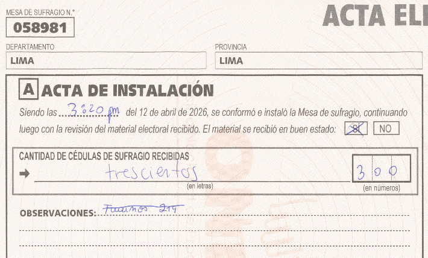
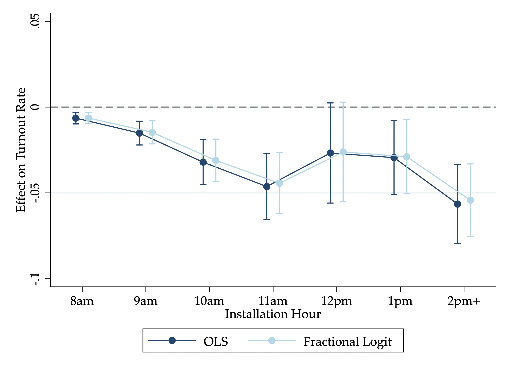
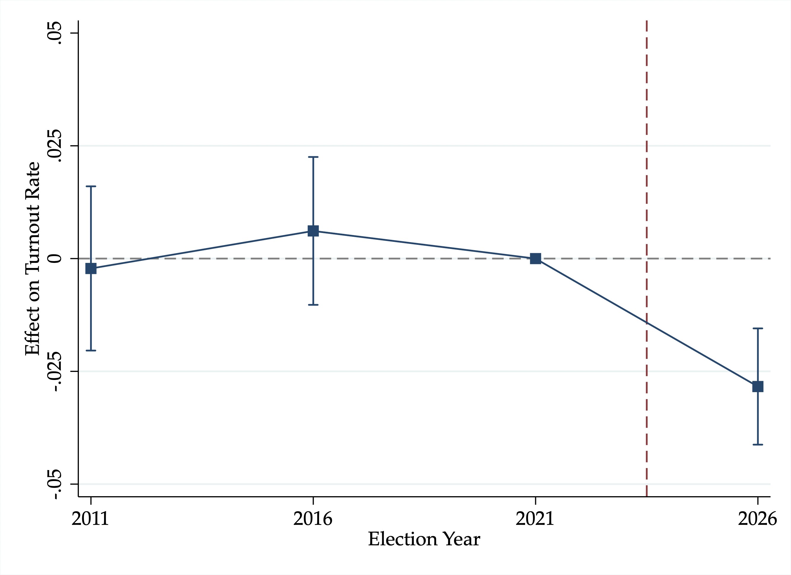
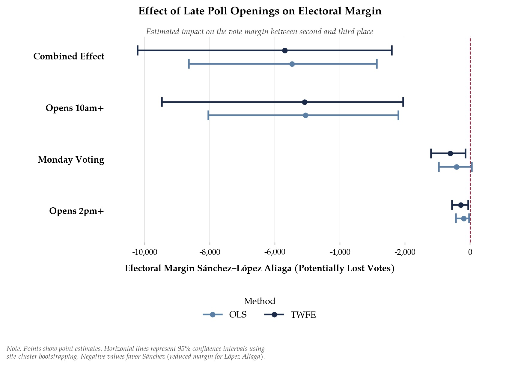

Key finding: The electoral errors, albeit leading to a significant decline in turnout and an impact on vote margins between the second and third-placed candidates, were not enough to overturn electoral results. We estimate a reduction of 3 to 5 percentage points in turnout among affected polling stations, translating to approximately 27,000 foregone votes.
Hallazgo principal: Los errores electorales, aunque condujeron a una disminución en la participación electoral y un impacto en los márgenes de votos entre el segundo y tercer candidato, no fueron suficientes para revertir los resultados electorales. Estimamos una reducción de 3 a 5 puntos porcentuales en la participación en las mesas afectadas, lo que se traduce en aproximadamente 27,000 votos perdidos.
Peruvians went to the polls for the first round of general elections on April 12, 2026. However, major logistical failures delayed the opening of polling stations (mesas) across Lima, in some cases by more than eight hours. Using 29,229 polling-station records (actas) in PDF form to recover opening times, we estimate that at least 817,765 eligible voters were assigned to mesas that opened more than three hours late, 69,139 to mesas that opened more than eight hours late, and 54,362 to mesas that did not open until the following day.1
Peruvian democracy now finds itself at an inflection point: the margin between second and third place, with only one advancing to the runoff, is approximately 21,209 votes (0.09%), the narrowest since Peru's return to democracy in 2000. The third-place candidate, Rafael López Aliaga, has contested the results through what we term the missing voters theory: the claim that hundreds of thousands of voters were unable to cast ballots because mesas opened late or failed to open altogether. López Aliaga has called for the annulment of the election and the imprisonment of the head of the National Office of Electoral Processes (ONPE).
Although these delays to polling site installations should never have occurred, our analysis suggests the winners of the first round of the presidential election, based on current ballot counts, are still legitimate.
Los peruanos acudieron a las urnas para la primera vuelta de las elecciones generales el 12 de abril de 2026. Sin embargo, importantes fallas logísticas retrasaron la apertura de mesas de sufragio en Lima, en algunos casos por más de ocho horas. Utilizando 29,229 PDFs de actas de instalación para recuperar los horarios de apertura de cada mesa, estimamos que al menos 817,765 electores hábiles fueron asignados a mesas que abrieron más de tres horas tarde, 69,139 a mesas que abrieron más de ocho horas tarde, y 54,362 a mesas que no abrieron hasta el día siguiente.1
La democracia peruana se encuentra ahora en un punto de inflexión: el margen entre el segundo y tercer lugar, con solo uno de ellos avanzando a la segunda vuelta, es de aproximadamente 21,209 votos (0.09%), el más estrecho desde el retorno del Perú a la democracia en el año 2000. El candidato que ocupa el tercer lugar, Rafael López Aliaga, ha impugnado los resultados a través de lo que denominamos la teoría de los votantes ausentes: la afirmación que cientos de miles de potenciales votantes acudieron a sus locales de votación asignados el 12 de abril, esperaron durante horas mientras las mesas no se instalaban a tiempo, y finalmente se retiraron sin votar. López Aliaga ha solicitado la nulidad de la elección y el encarcelamiento del jefe de la Oficina Nacional de Procesos Electorales (ONPE).
Aunque estos retrasos en la instalación de mesas de sufragio nunca debieron ocurrir, nuestro análisis sugiere que los ganadores de la primera vuelta de la elección presidencial, basados en los conteos actuales de votos, siguen siendo legítimos.
Estimating the effect of delays in opening polling stations on turnout is not straightforward because stations that open late are not necessarily random events. Our core statistical analysis leverages two complementary sources of variation to better approximate “apples-to-apples” comparisons: comparing neighboring polling tables within the same district, and then comparing each voting site against itself across four consecutive elections (2011 to 2026).
We define a polling station as “late” if a mesa opened more than three hours after its scheduled opening time of 7am, while also varying this threshold hourly until 2pm. In the previous three elections, almost no mesa opened more than three hours late, making it a reasonable cutoff for lateness. We additionally rely on the JNE’s official report identifying mesas confirmed to have opened after 2pm as a “ground truth” measure of delayed installations and separately examine mesas that opened the following day.
Estimar el efecto de los retrasos en la apertura de mesas de sufragio sobre la participación electoral no es sencillo porque las mesas que abren tarde no son necesariamente eventos aleatorios. Nuestro análisis estadístico aprovecha dos fuentes complementarias de variación para realizar comparaciones tipo “apples-to-apples”: comparamos mesas aledañas dentro del mismo distrito, y luego comparamos cada local de votación consigo mismo a lo largo de cuatro elecciones consecutivas (2011 a 2026).
Definimos una mesa como de apertura tardía si se instaló más de tres horas después de la hora de apertura programada (7am), y variamos este umbral hora por hora hasta las 2pm. En las tres elecciones anteriores, casi ninguna mesa abrió con más de tres horas de retraso, lo que lo convierte en un buen punto de corte para identificar retrasos extraordinarios. Adicionalmente, utilizamos el informe oficial del Jurado Nacional de Elecciones (JNE) que identifica las mesas que abrieron después de las 2pm, utilizándolo como una medida de referencia de instalaciones tardías. También examinamos por separado las mesas que abrieron al día siguiente.
Because no official 2026 election database was available during our analysis, we construct our own dataset by scraping the near-universe of available polling-station records (actas) across mesas in Lima. To compare turnout over time, we additionally collect voting site-level electoral data from presidential elections since 2011.
Debido a que no había una base de datos electoral oficial de 2026 disponible durante nuestro análisis, construimos nuestra propia base de datos extrayendo el universo casi completo de “actas de instalación” disponibles en todas las mesas de Lima. Para comparar la participación electoral a lo largo del tiempo, también recopilamos datos electorales a nivel de local de votación de las elecciones presidenciales desde el 2011.
We processed over 87,000 scanned actas using a state-of-the-art multimodal large language model (Gemini 2.5 Pro via Google Vertex) to recover polling station opening times from both digital and handwritten records, which were then manually verified. We additionally incorporated the JNE's April 16 report identifying mesas confirmed to have opened after 2pm.
Procesamos más de 87,000 actas escaneadas utilizando un modelo de lenguaje multimodal de última generación (Gemini 2.5 Pro vía Google Vertex) para recuperar los horarios de apertura de mesas tanto de registros digitales como manuscritos, que luego fueron verificados manualmente. También incorporamos el informe del JNE del 16 de abril que identifica las mesas que abrieron después de las 2pm.

Our core result suggests that those mesas that opened after 10am on Sunday experienced a decline in turnout by 3 percentage points. Among those mesas where we can confirm an opening time after 2pm, this effect increases to a 5.3 percentage point decline in turnout. Moreover, for those mesas that opened a full day late on Monday, we estimate a 5 percentage point decline in turnout.
Como se muestra en la Tabla 1, nuestro resultado principal sugiere que aquellas mesas que abrieron después de las 10 a.m. el domingo experimentaron una disminución en la participación electoral de 3 puntos porcentuales. Entre aquellas mesas donde podemos confirmar un horario de apertura después de las 2pm, este efecto aumenta a una disminución de 5.3 puntos porcentuales en la participación electoral. Además, para aquellas mesas que abrieron un día tarde (el lunes), estimamos una disminución de 5 puntos porcentuales en la participación electoral.
| (1) | (2) | (3) | (4) | (5) | (6) | (7) | (8) | |
|---|---|---|---|---|---|---|---|---|
| Panel A: OLS — Dependent variable is Turnout Rate (Mesa-Level) | ||||||||
| Late Opening | −0.030*** | −0.029*** | −0.016** | −0.023** | −0.034*** | −0.044*** | −0.053* | |
| (0.007) | (0.008) | (0.008) | (0.009) | (0.011) | (0.016) | (0.030) | ||
| ln(Opening Hour) | −0.076*** | |||||||
| (0.012) | ||||||||
| Observations | 28,796 | 28,796 | 28,796 | 28,796 | 28,796 | 28,796 | 26,217 | 28,661 |
| Panel B: Fractional Logit | ||||||||
| Late Opening | −0.029*** | −0.028*** | −0.016** | −0.022*** | −0.032*** | −0.041*** | −0.052* | |
| (0.006) | (0.007) | (0.007) | (0.009) | (0.010) | (0.014) | (0.027) | ||
| ln(Opening Hour) | −0.074*** | |||||||
| (0.012) | ||||||||
| Observations | 28,800 | 28,800 | 28,800 | 28,800 | 28,800 | 28,800 | 26,221 | 28,665 |
| Distrito Fixed Effects | Yes | Yes | Yes | Yes | Yes | Yes | Yes | Yes |
| Treated Sample | 10am+ | 11am+ | 12pm+ | 1pm+ | 2pm+ | JNE | Monday | Non-JNE |
| Treated Mesas | 2,750 | 1,572 | 657 | 423 | 233 | 135 | 171 | — |
Note: *** p < 0.01, ** p < 0.05, * p < 0.10. Robust standard errors clustered by voting site in parentheses. Treated sample refers to the definition of the treatment variable. JNE refers to mesas observed opening after 2pm by the Jurado Nacional de Elecciones report. Panel A reports OLS estimates. Panel B reports average marginal effects from fractional logit models. Column 7 only uses mesas that opened before 10am on Sunday as the control group. Column 8 drops all mesas flagged in the JNE report given installation times cannot be confirmed before 2pm.


When we “bin” the installation times of mesas into hourly intervals, we see an increasing pattern of turnout decline, as shown in Figure 2. However, this is not monotonic: there is a clear rebound for those mesas that opened around noon, as lunchtime gave voters a chance to return to the polls, although turnout continues to decline thereafter.
To show the impact of the delays relative to historical turnout rates, Figure 3 plots the results from an “event study,” focusing on those voting sites that comprise any mesa that opened after 10am on Sunday. There is an evident drop in turnout for the delayed mesas of 2026, with no differential trends in turnout over the last three prior elections.
Cuando agrupamos los horarios de instalación de las mesas en intervalos de una hora, también vemos un patrón creciente en la disminución de la participación electoral, como se muestra en la Figura 2. Sin embargo, este efecto no es monótono: existe un repunte claro en las mesas que abrieron alrededor del mediodía, ya que la hora del almuerzo dio a los votantes la oportunidad de regresar a las urnas, aunque la participación continúa disminuyendo en las mesas que abrieron después de la 1 p.m.
Para mostrar el impacto de los retrasos en relación con las tasas históricas de participación, la Figura 3 presenta los resultados de un “estudio de eventos” centrándose en los locales de votación que contienen mesas que abrieron después de las 10am del domingo. Se observa una evidente caída en la participación en las mesas que abrieron tarde en 2026, sin haber tendencias distintas de participación a lo largo de las tres elecciones anteriores.
The key question emerging from the analysis is: exactly how many foregone votes resulted from the installation delays at voting stations? Using our estimates of turnout loss, we perform back-of-the-envelope calculations to quantify these “missing voters.” In Table 2, we estimate an overall loss of votes approximating 27,000 voters. This estimate combines the effects from voting stations opening after 10am on Sunday, in addition to the loss in turnout for Monday-openers.
La pregunta clave que surge del análisis es: ¿exactamente cuántos votos no emitidos resultaron de los retrasos en la instalación de mesas de votación? Utilizando nuestras estimaciones en la pérdida de participación electoral, realizamos cálculos aproximados que cuantifican los “votantes ausentes.” En la Tabla 2, estimamos una pérdida total de votos que se aproxima a 27,000 votantes. Esta estimación combina los efectos de las mesas de votación que abrieron después de las 10am el domingo y los de las mesas que abrieron el lunes.
| (1) \(\hat{\beta}\) |
(2) Exposure-Weighted Registered Voters |
(3) \(\Delta\widehat{\text{Votes}}\) |
(4) 95% CI for \(\Delta\widehat{\text{Votes}}\) |
|
|---|---|---|---|---|
| Panel A: OLS (Dummy) | ||||
| 10am+ | −0.030 | 817,765 | −24,161 | [−34,609, −13,714] |
| 2pm+ (JNE) | −0.044 | 40,010 | −1,746 | [−2,999, −493] |
| Voted Monday | −0.053 | 50,776 | −2,710 | [−5,689, 268] |
| 10am+ and Voted Monday | — | 868,541 | −26,872 | [−39,506, −16,774] |
| Panel B: TWFE (Fraction) | ||||
| 10am+ | −0.030 | 818,174 | −24,329 | [−37,724, −10,934] |
| 2pm+ (JNE) | −0.065 | 40,608 | −2,630 | [−3,964, −1,297] |
| Voted Monday | −0.069 | 51,376 | −3,566 | [−5,591, −1,541] |
| 10am+ and Voted Monday | — | 869,550 | −27,895 | [−41,929, −12,855] |
Note: Exposure-weighted registered voters refers to total registered voters among delayed polling tables or voting sites. Panel A reports OLS estimates. Panel B reports TWFE estimates using the continuous fraction of mesas that opened late within a site (Voted Monday is included as it is effectively a 100% fraction). Combined 10am+ and Voted Monday sum the predicted foregone votes from the two constituent estimates, with uncertainty computed using a site-cluster bootstrap.
We then estimate how these foregone votes would have been distributed between the second- and third-place candidates. Because the observed López Aliaga–Sánchez margin was itself affected by the delays, we construct a counterfactual using vote shares from untreated mesas within the same district, or the nearest untreated district when necessary. In Figure 4, combining turnout losses from both 10am+ Sunday-openers and Monday-openers, we estimate that López Aliaga lost approximately 5,691 votes relative to Sánchez — comfortably below the roughly 21,209-vote gap separating the candidates.
Luego estimamos cómo estos votos no emitidos se habrían distribuido entre el segundo y tercer candidato. Debido a que el margen observado entre López Aliaga y Sánchez se vio afectado por los retrasos, construimos un contrafactual utilizando las proporciones de votos de mesas sin retrasos dentro del mismo distrito, o del distrito sin retrasos más cercano cuando resulta necesario. Combinando las pérdidas en la participación electoral tanto de las aperturas post-10am del domingo como de las aperturas del lunes, estimamos que López Aliaga perdió aproximadamente 5,691 votos en relación a Sánchez — muy por debajo de la brecha de 21,209 votos que hoy separa a los dos candidatos.

By tracking the first round of the Peruvian 2026 presidential election in real time, and using state-of-the-art LLMs combined with techniques in causal inference, our analysis reveals a strong decline in turnout, albeit not large enough to overturn electoral results.
Mediante un seguimiento en tiempo real de la primera vuelta de las elecciones presidenciales del Perú de 2026, combinando modelos de lenguaje de última generación con técnicas de inferencia causal, nuestro análisis revela una marcada disminución de la participación electoral en las mesas de Lima afectadas por retrasos en la entrega de material electoral. Sin embargo, el impacto no es suficiente para sostener que la composición de la segunda vuelta haya sido alterado. Estimamos que, de no haber habido aperturas tardías extraordinarias, la diferencia final entre los candidatos hubiera sido entre 15,510 y 16,210 a favor de Roberto Sánchez.
Dra. Beatriz Magaloni — Co-director of the Democracy Action Lab, Professor, Department of Political Science and Senior Fellow, FSI, Stanford University. Co-directora del Laboratorio de Democracia en Acción, Profesora del Departamento de Ciencias Políticas y Senior Fellow, FSI, de la Universidad de Stanford.
Beatriz Magaloni is Graham H. Stuart Professor of International Relations in the Department of Political Science and Senior Fellow at the Freeman Spogli Institute for International Studies, where she co-directs the Democracy Action Lab and also the Poverty, Violence and Governance Lab (POVGOV), which she founded in 2010. In 2023, she was awarded the Stockholm Prize in Criminology, considered the equivalent of the Nobel Prize in this field, in recognition of her research on police violence and mechanisms to reduce it, particularly her studies in Mexico and Brazil that demonstrated that police militarization and torture do not improve public safety but do erode human rights. Beatriz Magaloni es Graham H. Stuart Professor of International Relations en el Departamento de Ciencia Política y Senior Fellow del Freeman Spogli Institute for International Studies, donde codirige el Laboratorio de Democracia en Acción (Democracy Action Lab) y también el Poverty, Violence and Governance Lab (POVGOV) que ella misma fundó en 2010. En 2023, fue galardonada con el Premio Estocolmo en Criminología, considerado el equivalente al Nobel en este campo, en reconocimiento a su investigación sobre violencia policial y los mecanismos para reducirla, particularmente sus estudios en México y Brasil que demostraron que la militarización policial y la tortura no mejoran la seguridad pública pero sí erosionan los derechos humanos.
Dr. Alberto Díaz-Cayeros — Co-director of the Democracy Action Lab and Senior Fellow, FSI/CDDRL, Stanford University. Co-director del Laboratorio de Democracia en Acción y Senior Fellow, FSI/CDDRL, Universidad de Stanford.
Alberto Díaz-Cayeros is Senior Fellow at the Freeman Spogli Institute and co-director of the Democracy Action Lab at the Center on Democracy, Development and the Rule of Law (CDDRL). He directed Stanford’s Center for Latin American Studies from 2016 to 2023, and his work focuses on federalism, poverty alleviation, indigenous governance, the political economy of health, violence, and citizen security in Mexico and Latin America. Alberto Díaz-Cayeros es Senior Fellow del Freeman Spogli Institute y co-director del Democracy Action Lab en el Center on Democracy, Development and the Rule of Law (CDDRL); dirigió el Center for Latin American Studies de Stanford entre 2016 y 2023, y su trabajo se enfoca en federalismo, alivio de la pobreza, gobernanza indígena, economía política de la salud, violencia y seguridad ciudadana en México y América Latina.
Christopher Dann — Researcher, Democracy Action Lab. Investigador, Laboratorio de Democracia en Acción.
Chris Dann is a doctoral candidate at Stanford and a graduate fellow at POVGOV, with research focused on political economy. He was previously a pre-doctoral fellow with Professor Tim Besley at the London School of Economics. Chris Dann es candidato doctoral en Stanford y graduate fellow del POVGOV, con investigación centrada en economía política; previamente fue pre-doctoral fellow del profesor Tim Besley en la London School of Economics.
Democracy Action Lab — CDDRL
Stanford UniversityUniversidad de Stanford
Encina Hall, 616 Jane Stanford Way, Stanford, CA 94305
democracyactionlab@stanford.edu